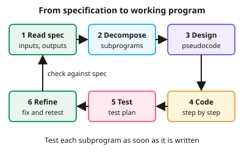

GCSE Computer Science · Topic 12
Practical programming and exam skills
Practical programming and exam skills is about writing, testing and improving real programs, and answering exam questions well.
We will turn a specification into working code, and debug and trace unfamiliar programs.
Then we implement searching and sorting algorithms, and practise evaluating solutions and writing extended answers.
- 4 subtopics
- 103 questions
- Free: 12.1 notes and 10 questions
In this topic
- 12.1Translating a specification into a working programFree below · 31 questions
- 12.2Debugging and tracing unfamiliar programsOpen in Full Marks · 30 questions
- 12.3Implementing searching and sorting algorithms in codeOpen in Full Marks · 25 questions
- 12.4Evaluating solutions and exam technique for code and extended-response questionsOpen in Full Marks · 17 questions
12.1 · Free notes
Translating a specification into a working program

Key points
- Start by reading the specification line by line and underlining every requirement: the inputs, the processing, the outputs, any validation and any data that must be stored. Each requirement should map to at least one line of code.
- Use decomposition: split the problem into subprograms (procedures and functions) that each do one job. A function returns a value to the caller (return), whereas a procedure just carries out actions. Parameters pass data in.
- Plan before coding with pseudocode or a flowchart. Use meaningful identifier names and keep any names the question gives you. Marks are lost for changing them.
- Choose suitable data types: integer, real/float, string, Boolean, character. Use casting (e.g. `int()`, `float()`, `str()`) because Python's `input()` always returns a string.
- Pick the right data structure. A one-dimensional array/list stores many items of the same type, a 2D array stores a table, and a record groups related fields. Arrays and lists are indexed from 0 in AQA Python and OCR pseudocode.
- Use the three programming constructs: sequence, selection (IF / ELSE IF / ELSE) and iteration. A count-controlled loop (FOR) is used when the number of repeats is known, and a condition-controlled loop (WHILE / REPEAT UNTIL) when it is not.
- Write conditions that match the wording exactly: 'at least 40' means `>= 40`, 'more than 40' means `> 40`. Use DIV (integer division) and MOD (remainder) for tasks such as converting 135 minutes to 2 hours and 15 minutes.
- Add validation when the spec asks for it. Types include range check, length check, presence check and type check. Put the input inside a WHILE loop so it repeats until it is valid. Validation checks that data is reasonable, not that it is correct.
- Use constants for fixed values such as `VAT_RATE = 0.2`, so a change is made in one place. Use comments and indentation to make the code maintainable.
- Build iteratively: write one subprogram, test it, then add the next. Design a test plan with normal, boundary and erroneous data and write the expected results from the spec before you run anything.
- Match output messages character for character with the spec. Remember the board formats: AQA and Edexcel practical papers are done on-screen in a high-level language such as Python, while OCR Paper 2 is written, using OCR Reference Language or a high-level language.
In more detail
- Worked specification: "Ask for 5 test scores (0–100), reject invalid entries, then show the average and the highest" → inputs: 5 scores; validation: range check; processing: total and maximum; outputs: average and highest.
- Worked outline: create an empty list; repeat 5 times: input a score until it is between 0 and 100, then add it; finally output the total ÷ 5 and the largest score.
- Worked conditions: "more than 18" → > 18; "18 or over" → ≥ 18; "between 1 and 10 inclusive" → ≥ 1 AND ≤ 10.
- Worked constant: PASS_MARK = 40 used throughout the program needs changing in only one place.
- Worked output: if the spec shows "Average: 72.5", print exactly that label and round to 1 decimal place.
Practice
Translating a specification into a working program: 10 questions
Pick an answer to check it, or open the answer for the explanation.
1. A spec states: 'The program must keep asking until the age entered is between 11 and 18.' Which structure is most suitable?
- One IF statement that prints an error once
- An array holding the numbers 11 to 18
- A FOR loop that runs from 11 to 18
- A WHILE loop that repeats while the age is outside 11–18
Show answer
D: A WHILE loop that repeats while the age is outside 11–18. The number of attempts is unknown, so a condition-controlled loop (WHILE/REPEAT) is needed. It repeats the input until the range check is passed.
2. In Python, age = input('Age: ') followed by print(age + 1) gives an error. What is the best fix?
- Use age = int(input('Age: '))
- Add a colon after input
- Use age = str(1)
- Declare age as a constant
Show answer
A: Use age = int(input('Age: ')). input() returns a string, and a string cannot be added to the integer 1. Casting with int() converts the input to a number first.
3. A spec requires 30 student names to be stored and then processed in a loop. Which data structure is most suitable?
- A one-dimensional array of 30 strings
- A Boolean variable
- One long string with no separators
- 30 separate variables
Show answer
A: A one-dimensional array of 30 strings. A 1D array/list holds many items of the same type and can be accessed by index inside a loop, so it needs far less code than 30 variables.
4. A spec says valid marks are 0 to 100 inclusive. Which of these is boundary test data for the upper limit?
- -5
- 100
- 'ten'
- 50
Show answer
B: 100. Boundary data sits at the edge of the valid range. 100 is the highest valid value, and 101 would be the first invalid one. 50 is normal, 'ten' and -5 are erroneous.
5. A subprogram must calculate the area of a rectangle and send the answer back to the main program. What should it be?
- A procedure that only prints the area
- A function that uses return
- A constant
- A count-controlled loop
Show answer
B: A function that uses return. A function returns a value to the part of the program that called it. A procedure carries out actions but does not return a value.
6. Why declare VAT_RATE = 0.2 as a constant at the top instead of typing 0.2 everywhere?
- It removes the need for variables
- Constants can be changed while the program runs
- The value can be changed in one place and the code is easier to read
- It makes the program run faster
Show answer
C: The value can be changed in one place and the code is easier to read. A named constant makes the code self-documenting and, if the rate changes, only one line needs editing. It does not change speed, and constants should not change at run time.
7. A spec: tickets cost £8 each, with a 10% discount when 5 or more are bought. What total should be output for 5 tickets?
- £32.00
- £36.00
- £4.00
- £40.00
Show answer
B: £36.00. 5 × £8 = £40. Five tickets qualifies for the discount, 10% of £40 is £4, so the total is £40 − £4 = £36.00.
8. A spec says passwords must contain at least 8 characters. Which validation check does this describe?
- Range check
- Length check
- Type check
- Presence check
Show answer
B: Length check. A length check tests the number of characters entered. A presence check only tests that something has been entered.
9. A spec requires totalling exactly 5 scores entered by the user. Which loop is most suitable?
- A WHILE loop where the counter never changes
- A count-controlled FOR loop that runs 5 times
- An IF statement with no loop
- A nested loop that runs 5 × 5 times
Show answer
B: A count-controlled FOR loop that runs 5 times. The number of repeats is known in advance, so a count-controlled FOR loop is ideal. A WHILE loop with no change to its counter would never stop.
10. When should the expected results in a test plan be written?
- Only for tests that fail
- Before running the tests, worked out from the specification
- After running the program, copied from the output
- They are not needed if the program runs
Show answer
B: Before running the tests, worked out from the specification. Expected results come from the spec, not the program. Writing them first means actual output can be compared fairly and any errors show up.
Keep going in Full Marks
Full Marks has 31 questions on Translating a specification into a working program (21 more than here), set out in practice levels. You also get notes and 3D models for all 4 subtopics of Practical programming and exam skills, plus games, timed exams and past papers.